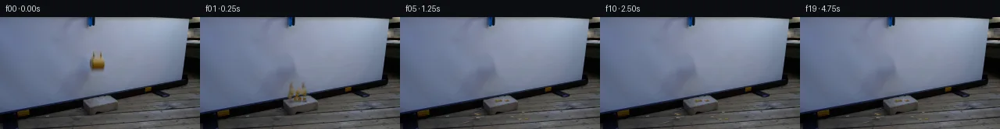

![首帧]()

Round 00
2026-11-05T14:05:47.344929+00:00像素候选变化代码 +259/−0inspection 更新
pixels 5c890071369c1435 · code 15b610878eb16d80
查看本轮 generate.py 真实 diff
--- previous/generate.py
+++ current/generate.py
@@ -0,0 +1,259 @@
+"""Pixel-only continuation of the supplied mug-drop photograph.
+No learned models, network, reference images, or external simulation engines.
+"""
+from pathlib import Path
+import json, math
+import numpy as np
+import cv2
+from PIL import Image, ImageDraw
+from artifact_io import save
+
+ROOT = Path(__file__).resolve().parent
+TMP = ROOT / '.tmp'
+TMP.mkdir(exist_ok=True)
+W, H, S, FPS = 256, 144, 4, 4
+DT = 1 / 480
+G = 1600.0
+IMPACT = (-25 + math.sqrt(25**2 + 2*G*41)) / G
+RNG = np.random.default_rng(124)
+ORIGINAL = np.array(Image.open(ROOT/'first_frame.png').convert('RGB'))
+
+# The former mug and its diffuse screen shadow are reconstructed exclusively
+# from surrounding pixels with classical Navier-Stokes inpainting.
+remove = np.zeros((H, W), np.uint8)
+cv2.ellipse(remove, (121, 61), (20, 26), -12, 0, 360, 255, -1)
+plate = cv2.inpaint(ORIGINAL, remove, 5, cv2.INPAINT_NS)
+# Feather within the mask; the unchanged area is kept byte-for-byte.
+feather = np.clip(cv2.distanceTransform(remove, cv2.DIST_L2, 5)/3.0, 0, 1)
+PLATE = np.rint(ORIGINAL*(1-feather[...,None]) + plate*feather[...,None]).astype(np.uint8)
+
+# Source-image silhouette, including its two slender upper handle/rim parts.
+sx, sy, sw, sh = 115, 42, 21, 27
+raw = ORIGINAL[sy:sy+sh, sx:sx+sw].astype(np.float32)
+bg = PLATE[sy:sy+sh, sx:sx+sw].astype(np.float32)
+yy, xx = np.mgrid[sy:sy+sh, sx:sx+sw]
+poly = np.array([[120,42],[122,43],[121,50],[127,51],[128,43],
+ [130,44],[131,51],[133,53],[134,56],[134,64],
+ [132,67],[120,67],[117,65],[115,60],[116,54],
+ [118,51],[118,46]], np.int32) - [sx,sy]
+sil = np.zeros((sh,sw), np.uint8)
+cv2.fillPoly(sil, [poly], 255)
+# Warm ceramic is separated from the cool screen by opponent color.
+chroma = (raw[...,0]-raw[...,2]) - (bg[...,0]-bg[...,2])
+contrast = bg[...,2]-raw[...,2]
+alpha = np.clip(np.maximum(chroma/54, contrast/74), 0, 1)*(sil/255)
+alpha[(yy<51)&(xx>=122)&(xx<=127)] = 0
+alpha[alpha<.16] = 0
+# Unmix anti-aliased silhouette pixels from their original screen color.
+ceramic = np.clip((raw-bg*(1-alpha[...,None]))/np.maximum(alpha[...,None],.2), 0, 255)
+# Remove some of the source's bottom-facing shadow; tumbling supplies new light.
+brighten = np.clip((115-ceramic[...,0])/95,0,.55)[...,None]
+ceramic = ceramic*(1-brighten)+np.array([148,119,61])*brighten
+tex = cv2.resize(ceramic, (sw*S, sh*S), interpolation=cv2.INTER_CUBIC)
+source_a = cv2.resize(alpha.astype(np.float32),(sw*S,sh*S),interpolation=cv2.INTER_LINEAR)
+source_a = np.clip(source_a,0,1)
+
+seeds = np.array([[119,48],[129,48],[119,55],[125,53],[131,54],
+ [120,59],[125,58],[131,59],[121,64],[127,64],
+ [132,64],[117,61],[124,62],[128,56],
+ [118,64],[133,61],[122,54],[130,52]],float)
+gy, gx = np.mgrid[0:sh*S,0:sw*S]
+global_x, global_y = sx+(gx+.5)/S, sy+(gy+.5)/S
+metric = ((global_x[...,None]-seeds[:,0])**2 +
+ .85*(global_y[...,None]-seeds[:,1])**2)
+labels = metric.argmin(axis=2)
+BRICK = np.array([[108,0],[137,-25],[149,-7],[117,25]],np.float32)
+BRICK_SCREEN = np.array([[108,108],[137,101],[149,106],[117,115]],np.int32)
+brick_shadow_mask = np.zeros((H*S,W*S), np.float32)
+cv2.fillPoly(brick_shadow_mask,[BRICK_SCREEN*S],1)
+
+
+def rotation(yaw, pitch, fold):
+ ca,sa = math.cos(yaw),math.sin(yaw)
+ cb,sb = math.cos(pitch),math.sin(pitch)
+ cc,sc = math.cos(fold),math.sin(fold)
+ return np.array([[ca,-sa,0],[sa,ca,0],[0,0,1.]]) @ np.array([[cb,0,sb],[0,1,0],[-sb,0,cb]]) @ np.array([[1.,0,0],[0,cc,-sc],[0,sc,cc]])
+
+
+def surface(x,d):
+ return 18.0 if cv2.pointPolygonTest(BRICK,(float(x),float(d)),False)>=0 else 0.0
+
+
+def screen(x,d,z):
+ return np.array([x,126+.28*d-.03*(x-125)-z])
+
+fragments = []
+for i in range(len(seeds)):
+ a = source_a*(labels==i)
… diff truncated; 172 more lines …